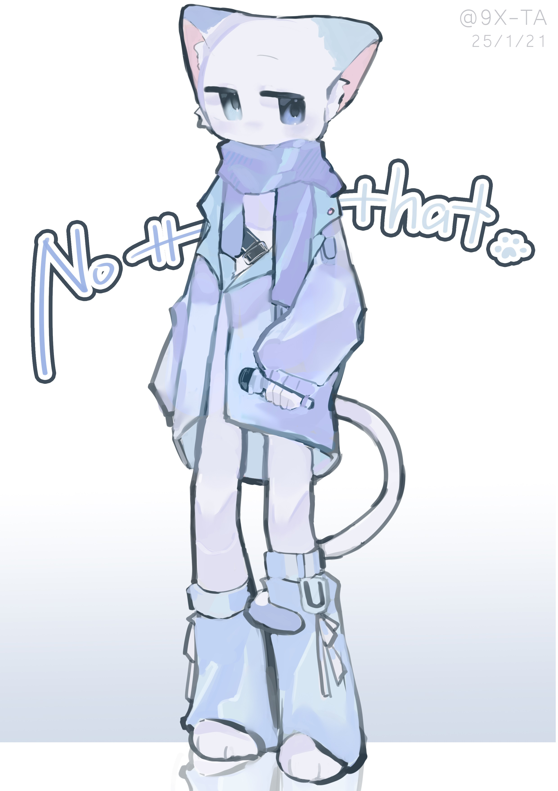

点击切换背景
音源下载
详细信息
设定资料
名字 Nottthat (nott.)
性别 男
年龄 16 (实际2岁)
身高 169 cm
生日 6月??日 (配布日2024/11/15)
外貌 异色瞳(深蓝/天蓝)，无高光，蓝色围巾
性格 平静、呆萌
制作团队
中之人 TNOT
原音设定 奈可塔克 (VCV) / TNOT (CN)
立绘绘制 OwO_Yume
更新日志 2025/2/13 中文正式配布
示例曲目
请在左右切换查看不同的演示视频（没有的话大概率是BUG，等我修）
加载中...
加载中...